微信 2.3 for S60V5/塞班3 全新发布
发布日期：2011-8-15
发布版本：微信2.3 for S60V5/塞班3
基于S60V5/塞班3平台的腾讯微信，带给您全新的消息体验，您可以使用微信快速收发消息，语音对讲，即时联系朋友。支持基于S60V5/塞班3平台的手持终端设备。
2.3版本增加以下主要功能：
1.查看附近的人：微信将会根据您的地理位置找到在您附近同样开启本功能的人，使您轻松找到身边正在使用微信的他们。
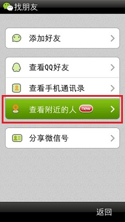 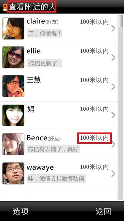2.发送QQ表情：给您多一种表达方式，让聊天更有趣。
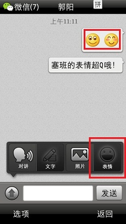 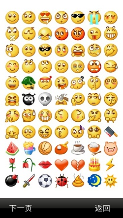3.微博私信消息：统一管理私信消息，微信微博两不误。
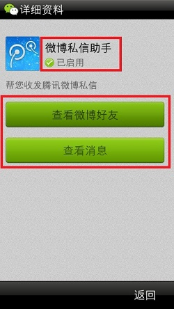 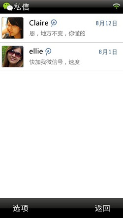4.视频接收：支持接收和播放iPhone版本发过来的视频。
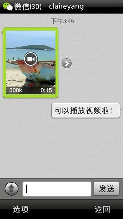5.自定义消息提示音：告别单调提示，让微信的声音更加动听。
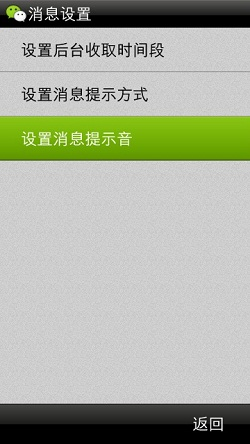 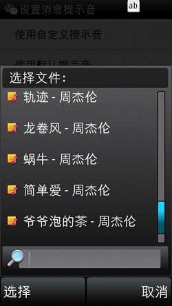6.个性签名：可以为自己编辑个性签名，让好友看到最特别的自己。
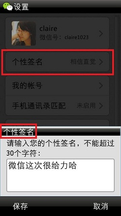 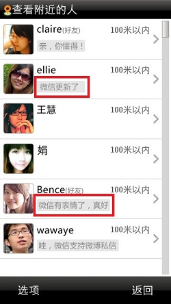7.手机号注册：支持通过手机号注册微信。
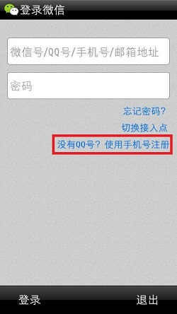 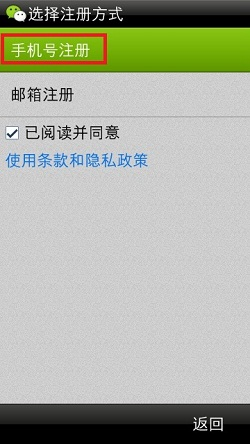8.绑定QQ号：方便使用邮箱和手机号注册的朋友绑定自己常用的QQ，和QQ好友保持畅快联系。
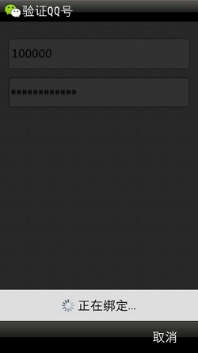 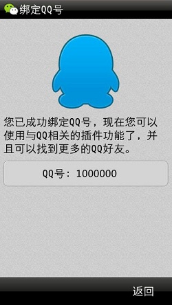发布版本：微信2.3 for S60V5/塞班3 点击下载
如果您想了解更多详情,或给我们反馈,可以通过以下方式联系我们：
官方网站：http://weixin.qq.com
腾讯微博：@weixin
新浪微博：@腾讯微信团队
微信号 ：weixin